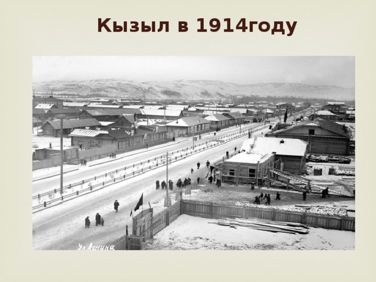

Белоцарском наш город был при российском императоре Николае II, Красным при большевиках, а Кызылом стал после образования Тувинской Народной Республики (ТНР). Были и другие имена – к примеру, Урянхайск, но именно эти три имени нашей столицы наиболее известны и отражают важнейшие исторические события Тувы ХХ века, связанные со становлением тувинской государственности, вхождением ТНР в состав Советского Союза, развитием республики в постсоветский период.
В начале ХХ века, после освобождения Тувы от колониального господства Китая, группа влиятельных тувинских нойонов обратилась к российскому императору Николаю II с просьбой о покровительстве. В апреле 1914 года царское правительство объявило протекторат России над Тувой, и она под наименованием Урянхайский край вошла в состав Енисейской губернии Иркутского Генерал-губернаторства.
Для усиления на новой территории влияния царской России, а также развития торговли и создания переселенческой базы, заведующему устройством русского населения в Туве Владимиру Габаеву было поручено выбрать место и приступить к строительству переселенческого пункта, который, по замыслу царских властей, со временем должен был стать административным, промышленным и торговым центром Урянхайского края.
В Государственном архиве Тувы сохранилось письмо Габаева нойону Даа хошуна Монгушу Буяну-Бадыргы о планах «создать в местности Виланах при слиянии двух притоков Енисея административный центр, при котором открыть русско-урянхайскую школу, больницу, ветеринарный пункт и сельскохозяйственный склад, в складе продавать по удешевленным ценам урянхайскому населению все необходимые предметы».
Так был основан Белоцарск. Название, как узнаем из письма Габаева начальнику переселенческого управления Григорию Глинке, «дано в честь Державного Вождя русского народа, известного урянхам под именем «Цаган-Хан», что означает в переводе Белый Царь». У истоков его основания стояли Владимир Габаев и топограф Максим Крючков, который разработал генеральный план нового города. Будущую столицу Тувы строили рабочие и крестьяне из Томска, Красноярска, Минусинска, Иркутска и других городов и сел Сибири. В 1915 году в Белоцарске было 18 казенных и 54 частных строения, открыты школа, больница, почта, метеостанция, появились небольшие промышленные мастерские. С 1 августа 1916 года в городе начала работать лесопилка, а с 1 декабря того же года – кожевенный завод.
Отстаивая выбор места для основания будущего города, чиновник особых поручений при министерстве земледелия Сергей Минцлов, командированный для обследования Урянхайского края, писал в своем докладе: «нынешний Белоцарск предназначен обслуживать значительное уже русское население Малого Енисея, весь Большой Енисей, и, кроме того, он лежит на пути из Усинского округа в середину Монголии, и, несомненно, явится не только административным, но и крупным торговым центром в весьма недалеком будущем».
Интересно читать о том, как застраивался будущий Кызыл. Согласно Правилам об отводе участков в собственность в Белоцарске, «каждый получивший участок и внесший за него соответствующую расценке сумму, обязуется огородить свой участок в течение года, устроить по улице тротуар и посадить деревья».
События 1917 года в России отразились и на жизни Урянхайского края. В 1918 году в Белоцарске большевиками был создан Урянхайский краевой Совет, созывались съезды представителей русского и тувинского населения края. 11 марта 1918 года Урянхайским краевым съездом было издано постановление о переименовании Белоцарска в Урянхайск. Однако, поскольку уже летом 1918 года город был занят отрядами армии Колчака, это название не закрепилось.
История Кызыла могла закончиться в 1919 году, когда город сильно пострадал во время боевых действий. Это было самое крупное сражение в Туве – Белоцарский бой между красными партизанами отряда Петра Щетинкина и Александра Кравченко и колчаковцами. Белоцарск практически был уничтожен пожаром, а жители его переселились в другие места.
X съезд представителей русского населения Тувы в сентябре 1920 года собрался в Туране. В одной из его резолюций говорилось: «Краевой съезд находит необходимым в самом срочном порядке принять меры к восстановлению города Белоцарска». Белоцарск «постановлено переменить, назвав Красным». Название это было предложено Иннокентием Сафьяновым – «в память бойцов, погибших за власть Советов».
В 1923 году, как ясно из протокола заседания ЦК Танну-Тувинской Народной партии, в восстановленный город из Турана переместилось Правительство ТНР. 25 июля 1923 года Красный был объявлен столицей Тувы. 24 декабря 1925 года ЦК Тувинской народно-революционной партии постановил назвать столицу ТНР городом Кызылом.
Столичный статус способствовал быстрому развитию города. В 1920-е годы появились первые каменные здания, предприятия промышленности, транспорта, учреждения образования и культуры. В начале 1930-х годов в городе было четыре улицы: Ленина, Красных партизан, Щетинкина и Кравченко, Кочетова, насчитывалось свыше тысячи различных построек. Были созданы Тувинский центральный кооператив (Тувинценкооп), Тувинский национальный банк. Тувинценкооп организовал в Кызыле предприятия по переработке сельхозсырья, колбасный цех, сапожную, пимокатную и портняжные мастерские. В начале 1940-х годов в Кызыле уже были мельница, лесозавод, электростанция и кирпичный завод, овчинно-шубное производство. В 1925 году открылась Кызылская типография, оборудование для которой предоставил Советский Союз. В 1931 году в Кызыле работала телефонная станция на 30 абонентов.
Первые культурно-просветительские учреждения в ТНР также возникли в Кызыле – библиотека, дом культуры, кинотеатр, республиканский музей, национальный театр-студия. В 1933 году был набран первый курс Кызылского педагогического техникума с количеством учащихся 20 человек.
В дни Великой Отечественной войны Тувинская Народная Республика выступила на стороне СССР и объявила войну фашистской Германии. Кызыл был центром мобилизации сил по оказанию материальной помощи СССР и Советской Армии. Кызылчане инициировали создание фонда обороны СССР, сбор теплых вещей, шефство над госпиталями, домами детей-сирот. В декабре 1942 года жители Кызыла начали сбор средств на строительство авиаэскадрильи «Тувинский народ – фронту». Только за месяц было собрано свыше 200 тыс рублей.
За 1941-1943 годы рабочие Кызыла изготовили более 70 тыс пар лыж, 20 тыс пар валенок, около 15 тыс полушубков, заготовили 130 тыс тонн сухарей для нужд фронта. Проживавшие в Туве граждане СССР призывались в армию. Также непосредственное участие в боях добровольно принимали граждане ТНР – кавалеристы, танкисты и летчики.
17 августа 1944 года в Кызыле состоялась Чрезвычайная сессия Малого Хурала трудящихся ТНР, принявшая декларацию о вхождении Тувинской Народной Республики в состав СССР. 13 октября 1944 года ТНР была принята в состав СССР на правах автономной области РСФСР. В 1961 году автономная область была преобразована в Тувинскую Автономную Советскую Социалистическую Республику. С 1991 года Кызыл – столица Республики Тыва.
В 1915 году в Белоцарске насчитывалось всего 468 жителей. После гражданской войны и пожара население в 1921 году составляло не более 200 человек. После объявления Кызыла столицей Тувы и переезда сюда Правительства ТНР население стало быстро увеличиваться. К 1930 году численность кызылчан достигла трех тысяч жителей, к концу 1944 года удвоилась и составила 6,5 тысяч человек.
На начало 2014 года, по данным Тывастата, численность населения Кызыла составляла более 113 тысяч человек. Это больше трети всего населения Тувы и больше 70 процентов горожан республики. В городе проживают представители более 70 национальностей – тувинцы, русские, хакасы, буряты, татары, украинцы и другие. Конфессиональный состав – буддисты, православные, а также представители иных религий.
Современный Кызыл – это административный центр Республики Тыва. Это промышленный, транспортный, научный, деловой и культурный центр, входящий в Ассоциацию сибирских и дальневосточных городов. Здесь расположены правительство республики, Верховный Хурал (парламент), крупнейшие в Туве культурно-просветительские, спортивные учреждения, музеи и библиотеки, книгоиздательство, редакции газет, теле и радиокомпании.
Из столичного аэропорта "Кызыл" выполняются рейсы в Москву, Новосибирск, Красноярск, Иркутск и в труднодоступные населенные пункты Тывы. Автотрасса А-162 связывает Кызыл с Ак-Довураком; федеральная автотрасса М54 "Енисей" обеспечивает сообщение с Абаканом и Монголией. Существует регулярное автобусное сообщение с Красноярском, Новосибирском, Иркутском и Томском.
Широко известен Кызыл как центр Азиатского материка. Обелиск "Центр Азии" и скульптурная композиция "Царская охота" на набережной Енисея главные достопримечательности города. Гостям покажут своеобразное здание буддийского храма, источники целебной воды Аржаан вблизи Кызыла, сокровища национального краеведческого музея имени Алдан-Маадыр, достраивающееся новое здание музея с великолепным "золотым" куполом, по форме совпадающим с традиционным жилищем тувинцев юртой, красивейшее здание музыкально-драматического театра, естественный парк у излучин Енисея и другие памятные места города.
Тувинцы, как этнос азиатских культур, носитель древних искусств пения горлом "хоомей", музыкальных инструментов хомус, бызанчы, игил, красоты национальной борьбы "хуреш", счастливы показать свое видение и интерпретацию природы "страны голубых рек и озер" через свое искреннее гостеприимство и доброжелательность.
